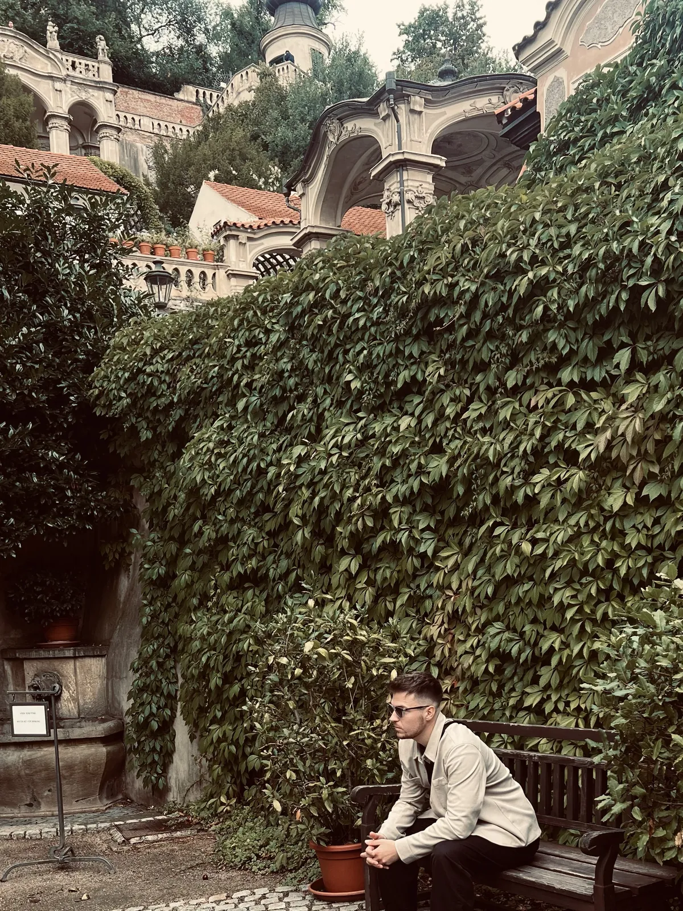

🇨🇿 Prag Guide: Hidden Gems, Gärten & Tagesplan

Inhaltsverzeichnis
- Meine Story in Prag
- Auf einen Blick
- So kommst du nach Prag
- Unterwegs in Prag: Tickets, Geld, Fallen
- 1. Gärten & stille Ecken rund um die Kleinseite
- 2. Neustadt: Passagen, Garten und Kubismus in fünf Minuten
- 3. Aussicht & Biergarten
- 4. Vyšehrad: der Friedhof der Großen
- 5. Kunst & Schräges
- 6. Essen & Trinken
- Wo übernachten?
- 7. Tagesausflüge ab Prag
- Dein Plan
- Häufige Fragen
Prag kennt jeder – und gerade deshalb bleibt man hier so leicht an den falschen Ecken hängen. Dieser Guide führt dich um die Massen herum: zu Gärten hinter unscheinbaren Toren, zu einem Friedhof, der eher ein Freilichtmuseum ist, zu Biergärten mit Blick über die Stadt und zu Orten, an denen auch Prager essen.
Alles ist so aufgebaut, dass du es an einem langen Wochenende schaffst – auch wenn du nicht ewig Urlaub hast. Unten findest du einen Drei-Tage-Plan, die wichtigsten Preise und Tipps zu Anreise und Geld.
Meine Story in Prag
In Prag war ich 2024. Das echte Prag habe ich in Malá Strana gelernt: Sobald du von der Karlsbrücke in die Seitengassen abbiegst, wird es ruhig – Kopfsteinpflaster, Palastgärten, die Straßenbahn quietscht um die Ecke. Mein Rat: um 7 Uhr über die Brücke und dann sofort in die Kleinseite, bevor die Gruppen kommen.

Dieser Guide enthält Werbe-Links (GetYourGuide, Omio). Wenn du darüber buchst, bekomme ich eine kleine Provision – du zahlst keinen Cent mehr. Preise und Öffnungszeiten ändern sich – vor dem Besuch kurz prüfen.
Auf einen Blick
So kommst du nach Prag
Mit dem Flugzeug
Die günstigste Verbindung in die Altstadt: Bus 119 bis Nádraží Veleslavín, dort in die grüne Metro-Linie A. Das dauert insgesamt rund 40 Minuten, und ein 90-Minuten-Ticket deckt beide Fahrten ab. Der Airport Express (AE) fährt in etwa 35 Minuten direkt zum Hauptbahnhof (Hlavní nádraží) und kostet extra. Tickets gibt es an den gelben Automaten im Terminal oder in der App PID Lítačka.
Mit dem Zug
Berlin–Prag fährst du direkt in etwa 4 bis 4,5 Stunden, mit rund acht Direktverbindungen pro Tag. Ab Dresden sind es gut zwei Stunden. Frühbuchen lohnt sich: Sparpreise liegen oft im Bereich von etwa 25–35 € in der 2. Klasse, am Reisetag kann es deutlich teurer werden.
Mit dem Bus
Fernbusse (zum Beispiel FlixBus) verbinden Prag mit vielen deutschen Städten – oft die günstigste, aber langsamste Variante.
Unterwegs in Prag: Tickets, Geld, Fallen
Zu Fuß ist Prag am schönsten
Altstadt, Kleinseite und Burg liegen eng beieinander – plane lieber Gehzeit als Bahnfahrten ein. Für die Hügel (Burg, Letná, Vyšehrad) sind Tram und Metro Gold wert.
Tickets für Metro, Tram und Bus
- Ein Ticket gilt in Metro, Tram und Bus. Es gibt 30-Minuten-, 90-Minuten-, 24-Stunden- und 72-Stunden-Tickets.
- Ungefähre Preise (Stand 2026, digitale Tickets sind meist etwas günstiger): 90 Minuten rund 40–50 Kč, 24 Stunden rund 120–150 Kč, 72 Stunden rund 330–350 Kč.
- Papiertickets sofort entwerten. Kontrolleure sind in Zivil unterwegs; ohne gültiges Ticket zahlst du rund 1.200 Kč.
- Die Metro fährt grob von 5 Uhr bis Mitternacht, danach übernehmen die Nachttrams 91–99.
Geld
Bezahlt wird in Kronen. Kartenzahlung klappt fast überall. Wechselstuben in der Altstadt lohnen sich selten – zieh lieber Bargeld an einem Geldautomaten einer normalen Bank. Fragt Automat oder Kartenterminal, ob du in Euro oder in Kronen zahlen willst: immer Kronen wählen. Am Biergarten im Letná-Park nehmen manche Stände nur Bargeld.
Touristenfallen
Die Karlsbrücke ist tagsüber überfüllt – Noels Tipp: um 7 Uhr hingehen. Der Schornsteinkuchen Trdelník wird gern als typisch tschechisch verkauft, gilt aber eher als Touristen-Snack. Probier lieber ein Mittagsmenü oder ein Gebäck vom Bäcker.
1. Gärten & stille Ecken rund um die Kleinseite
Malá Strana ist das Viertel unterhalb der Burg. Sobald du von der Karlsbrücke abbiegst, wird es ruhiger – und die schönsten Orte liegen hinter Toren, an denen die meisten vorbeilaufen.
Vrtba-Garten (Vrtbovská zahrada)💎 Hidden Gem
Ein barocker Terrassengarten, versteckt hinter einem unscheinbaren Durchgang an der Karmelitská-Straße – genau deshalb ist hier selten viel los. Der Garten wurde um 1720 angelegt und steigt in Terrassen den Hang hinauf. Von der obersten Ebene schaust du über die Dächer der Kleinseite bis zur Burg.
Tipp: Je früher, desto ruhiger – gleich nach der Öffnung hast du die Terrassen oft fast für dich.
Wallenstein-Garten (Valdštejnská zahrada)
Barocker Palastgarten direkt unter der Burg – und kostenlos. Zwischen Springbrunnen und Skulpturen laufen Pfauen herum (mit Glück auch ein weißer), im großen Teich schwimmen riesige Fische, und am Ende des Gartens wartet eine Wand aus künstlichem Tropfstein mit versteckten Gesichtern.
Tipp: Der Eingang liegt bei der Metro-Station Malostranská (Linie A). Im Sommer gibt es teils kostenlose Konzerte, und in der Hauptsaison ist samstags der Palast des Senats zugänglich.
Aufstieg durch den Hirschgraben (Jelení příkop)
Statt die Burg über die vollen Treppen zu erobern, führt dieser Weg ruhiger hinauf – unter anderem durch einen rund 84 Meter langen Fußgängertunnel, unter dem ein kleiner Bach fließt. Oben bist du direkt im Burgareal.
Tipp: Das Goldene Gässchen im Burgareal ist laut Besucherinfo am späten Nachmittag im Ticketsystem frei (ab 16 Uhr, im Sommer ab 17 Uhr). Aktuelle Regeln vor Ort prüfen.
Prager Burg
Die Höfe und Gärten der Burg kannst du nach der Sicherheitskontrolle kostenlos betreten. Für den Veitsdom und die anderen Gebäude brauchst du ein Rundgang-Ticket. Die Gruppen kommen meist später am Vormittag – wer früh oben ist, hat deutlich mehr Platz.
Tipp: Hoch über die Nerudova-Gasse, runter durch den Hirschgraben – so läufst du keine Strecke doppelt.
2. Neustadt: Passagen, Garten und Kubismus in fünf Minuten
Rund um die Vodičkova-Straße, nur einen Katzensprung vom Wenzelsplatz, liegen drei Orte dicht beieinander, die die meisten Besucher auslassen.
Lucerna-Passage (Pasáž Lucerna)💎 Hidden Gem
Eine Passage aus den 1920er-Jahren mit Art-déco-Flair, einem historischen Kino und Cafés. Das Highlight hängt von der Decke: eine Skulptur von David Černý, die den heiligen Wenzel auf einem kopfüber hängenden Pferd zeigt – eine freche Antwort auf das Reiterdenkmal draußen am Wenzelsplatz.
Tipp: Wirf auch einen Blick in das Kino Lucerna – der Saal aus den 1920ern ist für sich schon sehenswert.
Franziskanergarten (Františkánská zahrada)💎 Hidden Gem
Ein stiller Garten mitten in der Neustadt mit Bänken, Rosen, Skulpturen und einem kleinen Café – ideal für eine Pause zwischen zwei Sehenswürdigkeiten. Franziskanermönche haben ihn schon im 14. Jahrhundert angelegt. Der Eingang liegt an der Vodičkova bzw. am Jungmannplatz.
Tipp: Direkt davor am Jungmannplatz steht die berühmte kubistische Laterne.
Kubistische Laterne am Jungmannplatz
Die Straßenlaterne von 1913 (Entwurf: Emil Králíček) gilt als die einzige kubistische Laterne der Welt – ein kleiner Stopp für alle, die Architektur und Design mögen.
3. Aussicht & Biergarten
Letná-Park & Metronom
Im Letná-Park steht ein riesiges Metronom genau dort, wo einmal das größte Stalin-Denkmal der Welt stand. Von hier schaust du über die Moldau auf die Altstadt und die Brücken.
Biergarten Letenské sady
Der Klassiker für den Sonnenuntergang: lange Holztische unter Kastanien, frisch gezapftes Bier und der Blick über die Stadt. Hier trinken Prager und Touristen nebeneinander.
Tipp: Nimm Bargeld in Kronen mit – manche Stände nehmen keine Karte. Der Weg hinauf ist etwas steil, und abends zurück gehst du besser nicht allein durch den Park.
Žižkov-Fernsehturm
216 Meter hoch, mit Aussichtsplattform auf rund 99 Metern. Am Turm krabbeln die bekannten Baby-Skulpturen von David Černý nach oben – ein typisch schräges Prag-Motiv.
Tipp: Verbinde den Besuch mit einem Abend in Žižkov oder Vinohrady, wo es viele Kneipen und Cafés gibt.
4. Vyšehrad: der Friedhof der Großen
Vyšehrader Friedhof und Slavín💎 Hidden Gem
Auf dem Hügel über der Moldau liegt der wichtigste Friedhof Tschechiens – eher ein Freilichtmuseum als ein Ort der Trauer. Hier ruhen unter anderem die Komponisten Antonín Dvořák und Bedřich Smetana, der Maler Alfons Mucha und der Schriftsteller Karel Čapek. Am östlichen Ende steht das Pantheon Slavín.
Tipp: Der Eingang liegt links der Peter-und-Paul-Kirche. Eine Namensliste am Eingang zeigt dir, wo die bekannten Gräber liegen.
Festung Vyšehrad
Die Anlage über der Moldau – mit Basilika, Wällen, kleinen Bistros und freiem Blick auf die Stadt – wird oft die zweite Prager Burg genannt und ist deutlich ruhiger als die große Schwester.
5. Kunst & Schräges
DOX – Zentrum für zeitgenössische Kunst💎 Hidden Gem
Ein ehemaliges Industriegebäude in Holešovice mit zeitgenössischer Kunst, Fotografie und Design. Auf dem Dach hängt ein hölzernes Luftschiff namens Gulliver – ein ungewöhnlicher Ort für Ausstellungen und Gespräche.
Tipp: Das Viertel rundherum hat viele Cafés und Ateliers – gut für einen ruhigen Nachmittag.
Die Černý-Skulpturen
Der Künstler David Černý hat Prag mit schrägen Skulpturen gefüllt: Sigmund Freud hängt an einer Stange über der Straße, ein riesiger Kafka-Kopf dreht sich vor dem Einkaufszentrum Quadrio, die Babys krabbeln am Fernsehturm hoch, und in der Lucerna-Passage hängt das Pferd kopfüber. Eine Mini-Schnitzeljagd quer durch die Stadt.
6. Essen & Trinken
Tschechisch essen heißt herzhaft, sättigend und Bier dazu. Die Klassiker: Svíčková (Rinderbraten mit Sahnesoße und Knödeln), Gulasch mit Knödeln und Smažený sýr (gebackener Käse). Viele Lokale bieten werktags mittags ein denní menu – meist Suppe plus Hauptgericht zum Festpreis und deutlich günstiger als abends. Und beim Bier: Das Pilsner wurde in Tschechien erfunden; in vielen Kneipen gibt es Tankbier, das direkt aus großen Tanks gezapft wird.
Café Savoy
Ein Café mit prächtiger, verzierter Stuckdecke, das seit über hundert Jahren Gäste empfängt. Ideal fürs Frühstück nach dem frühen Spaziergang durch die Kleinseite.
Tipp: Am Wochenende vorher reservieren.
Havelská Koruna
Selbstbedienungskantine nahe der Altstadt mit tschechischen Klassikern zu fairen Preisen. Du bekommst am Eingang einen Zettel, an jeder Theke wird dein Gericht notiert, bezahlt wird am Ende. Ehrlich gesagt: Die Qualität schwankt, und zur Mittagszeit gibt es Schlangen – zum Kennenlernen der Küche aber ein guter Einstieg.
Manifesto Market Anděl
Ein Streetfood-Markt in Containern mit Küche aus aller Welt, Bars und Konzerten. Die Qualität der Stände schwankt, aber an einem Sommerabend ist die Stimmung schwer zu schlagen.
Wo übernachten?
- Malá Strana (Kleinseite): ruhig, romantisch, nah an Burg und Gärten – dafür teurer.
- Staré Město (Altstadt): maximal zentral, aber laut und voll.
- Nové Město (Neustadt): rund um die Vodičkova – Passage, Garten und Wenzelsplatz in Laufweite.
- Vinohrady und Žižkov: Wohnviertel mit Cafés und Kneipen, gut an Metro und Tram angebunden, mehr Alltag.
- Holešovice und Letná: hip, mit Galerien, Cafés und dem Park vor der Tür.
Tipp: Such die Unterkunft nach Metro- oder Tram-Anbindung statt nur nach der Entfernung zur Altstadt – die Wege in Prag sind kurz.
7. Tagesausflüge ab Prag
Kutná Hora und das Beinhaus von Sedlec
Etwa eine Stunde östlich von Prag liegt das Beinhaus von Sedlec mit einem Kronleuchter aus menschlichen Knochen. Dazu kommt die Altstadt von Kutná Hora, die UNESCO-Welterbe ist.
Tipp: Fährt direkt ab dem Hauptbahnhof – den aktuellen Fahrplan vorher prüfen.
Karlsbad (Karlovy Vary)
In Karlsbad läufst du mit einem Trinkbecher von Kolonnade zu Kolonnade und probierst das Heilwasser. Es schmeckt nicht besonders – gehört aber dazu. Zur Belohnung gibt es danach einen Becherovka, dessen Rezept angeblich nur zwei Menschen kennen. Die Stadt soll auf Kaiser Karl IV. zurückgehen, der der Legende nach bei der Jagd die heißen Quellen entdeckte.
Tipp: Plane für Hin- und Rückfahrt mehrere Stunden ein – ein früher Start lohnt sich.
Dein Plan
Tag 1: Kleinseite & Burg
- 7:00 – Karlsbrücke, solange sie leer ist, dann in die Gassen der Kleinseite
- 9:00 – Frühstück im Café Savoy
- 10:00 – Vrtba-Garten gleich zur Öffnung
- 11:30 – Wallenstein-Garten (April–Oktober) oder weiter durch die Gassen
- 13:00 – Mittagsmenü in einem Lokal abseits der Hauptstraßen
- 14:30 – Über die Nerudova zur Burg, zurück durch den Hirschgraben
- 19:00 – Sonnenuntergang im Biergarten von Letná (April–September)
Tag 2: Neustadt & Aussicht
- 9:00 – Lucerna-Passage mit dem Černý-Pferd
- 10:00 – Franziskanergarten und kubistische Laterne
- 12:30 – Mittagessen in der Havelská Koruna oder mit Mittagsmenü
- 14:00 – Altstadt und ihre Gassen, danach Pause im Garten
- 17:00 – Žižkov-Fernsehturm und Abend in Vinohrady oder Žižkov
Tag 3: Vyšehrad, Kunst oder Ausflug
- 9:00 – Vyšehrader Friedhof und Festung
- 12:00 – Mittag im Manifesto Market Anděl
- 14:00 – DOX in Holešovice – oder statt des Nachmittags ein Ausflug nach Kutná Hora
Häufige Fragen
Wie viele Tage braucht man in Prag?
Für die Highlights reichen 2–3 Tage, mit einem Tagesausflug (zum Beispiel nach Kutná Hora) 4. Wenn du wenig Urlaub hast, klappt auch ein langes Wochenende – starte dann früh und plane die Gärten und Aussichten statt vieler Museen ein.
Wann ist die beste Reisezeit?
Frühling und früher Herbst sind angenehm und nicht so voll und heiß wie der Hochsommer. Gärten wie Vrtba und Wallenstein sind nur von April bis Oktober geöffnet – Zeiten vorher prüfen.
Brauche ich Euro oder Kronen?
Kronen (CZK). Kartenzahlung klappt fast überall. Meide Wechselstuben in der Altstadt, und wähle beim Bezahlen oder am Geldautomaten immer die Abrechnung in Kronen.
Kann man Leitungswasser trinken?
Ja, das Leitungswasser in Prag ist trinkbar.
Ist Prag sicher?
Im Großen und Ganzen ja. In vollen Trams, an der Karlsbrücke und in Touristenzonen gibt es Taschendiebe – trag Wertsachen eng am Körper.
Wann ist die Karlsbrücke leer?
Am ruhigsten ist sie früh am Morgen. Noels Rat: um 7 Uhr über die Brücke und dann sofort in die Kleinseite, bevor die Gruppen kommen.
🗺️ Alle Orte auf meiner Karte → Mehr Guides und Reels auf Instagram: @hiddengem.atlas
Guide teilen: Per WhatsApp